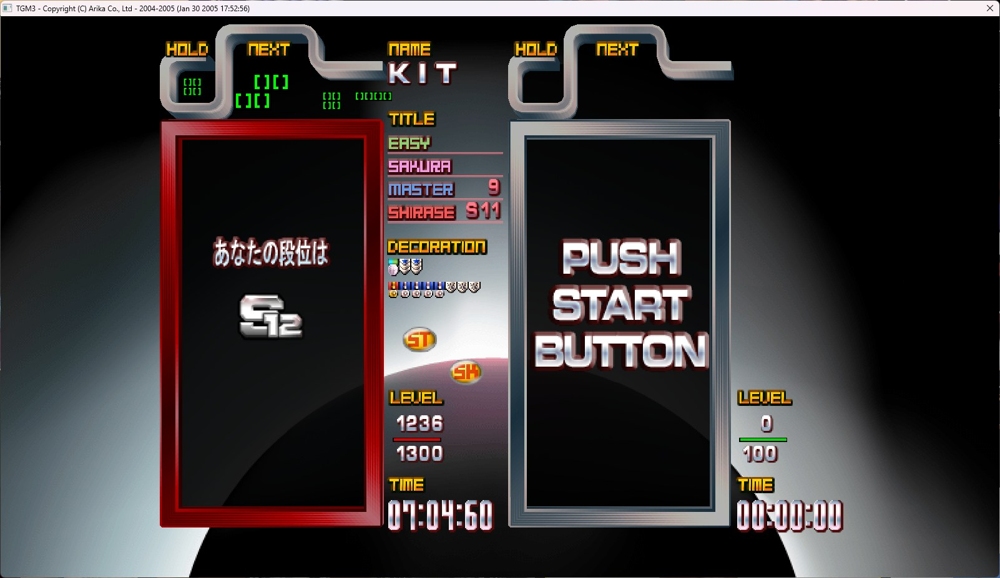

Well... Sadly, Neneko isn't my real name. (I wish it was.)
My actual name is N***** K*** M*** (you will know if you check my
Facebook account).
I'm years old (born May 6th, 2008).
I am a high school student in Hanoi, Vietnam. I love programming, especially web development (even though my brain is melting from working 25 hours in 3), mostly because that is only what I know at the moment.
I'm a trans girl (male to female just in case you don't know) and also am pansexual, meaning I don't care about the gender of people I love :3
Just in case, please do NOT confuse me with the famous cosplayer with
the same name.
Mine is written in Hiragana (ねねこ) while theirs is written in Katakana
(ネネコ).
And yes, I procrastinate a lot, like most of you guys.
It was a struggle. Really. I started my very amateurish coding journey with Lua, by editing an Etterna skin, way back in 2022! (forked on my GitHub page.)
Then, I moved on to HTML and CSS, and made a few simple static websites. (Also on my GitHub.)
After that, I learned a bit of JavaScript, and made a few simple interactive websites. (Also on my GitHub. What do you expect?)
And then comes Firebase intergration. Not a programming language, but that's where most of the frustration came from sadly.
Now, I'm learning Python and C++, and trying to make more complex projects (soon enough to be on my GitHub hopefully).
Gaming is my main stress reliever (and causer). I play a lot of games, but my main ones are:
So yea. I do play a lot of shooter games, from mobile to PC.
In chronological order I have:
Needless to say, my skills were decent at most. I usually have my sensitivity not tailored but rather accustomed from the start, which caused some overshooting and undershooting alike.
And I do not fare well with games that require precise headshots (like CS:GO or Valorant) and I couldn't get myself to aim at their heads.
I have been playing Tetris off and on since I was a kid, but I only got serious about it in 2021.
TETR.IO. A modern, online Tetris game with a lot of features.
I started playing it in around August 2021, when the game was still in Alpha. I played it casually at first, but then I started to get more serious about it. Slowly, I climbed through the ranks from D to A+ (14k TR), before taking a break until 2024.
Then comes Beta. Quick Play 2 (Zenith Tower). I became dedicated again. Season 2 of Tetra League came and I reached S (16k TR) in around 2 months.
Sadly, I couldn't reach S+ due to skill issues and time constraints (school, you know). I called it and just played casually up to now.
Nowadays, I mostly play TGM4, TGM3, Techmino, and Master of Blocks (MoB).
Having started playing TGM3 in around late 2022, at first I struggled a lot with the game's speed and mechanics, failing to beat the 7:30 torikan at Master mode at level 500 at my first time.
But after a few months of practice, I finally managed to beat the entire move (reaching level 999) it a few months later, getting high S grades, then onto m grades. My current best is m9.
Qualification exams are a different story. Since my plays were, and are so inconsistent, I am always on the verge of demotion and promotion, and I have been demoted a few times (once from m1 to S9), as well as failing the exam a few times (the worst one was a m5 fail).
Shirase mode, the mode at which people practically play at the speed of light, was my favorite.
I had been stuck at level 500 torikan for almost a year (before late 2024), before I finally managed to pass it in around almost a year of constant practicing! The 3:03 torikan was cruel...
And comes the even harder part: surviving the constantly rising garbage lines. Fortunately enough, the lock delay stays constant during this phase (12 frames from 600 to 1099) so when you build up enough confidence, you can easily survive with ease.
Next comes the level 1000+ gimmick: Monochrome blocks ([ ]), basically taking away the colors of the blocks, making it harder to see the blocks and plan ahead. I struggled a lot with this, combined with a gruelling 10 frames of lock delay (and 8 at 1200+!), was too much for me to handle.
My current best is only level 1236.
